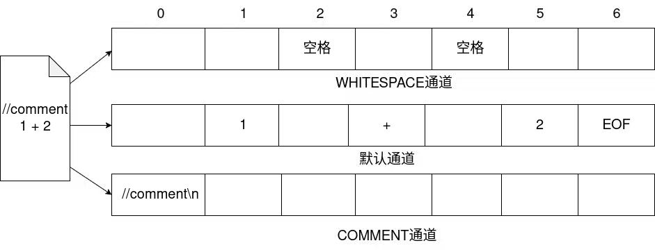

Week 3 - Lexer 2¶
在使用ANTLR构建Lexer时你可能会遇到的特殊情况¶
最长匹配原则¶
现在我们来讨论一个有趣的问题。假设我们有以下三条词法规则：
BE: '>='
BT: '>'
ASSIGN: '='
那么，当源代码中出现 x >= 5 时，>= 会被如何识别？是两个独立的符号 > 和 =，还是一个整体的 >=？
在 ANTLR 中，默认遵循 最长匹配原则（Longest Match Principle）。这意味着 ANTLR 会尽可能地匹配更多的字符。虽然 >（一个字符）能匹配成功，但 >=（两个字符）也能匹配成功，并且长度更长。因此，ANTLR 会选择后者，将 >= 识别为一个 BE 类型的 Token。
非贪婪匹配¶
我们再来看一个更加实际的例子。
假设我们需要为 Java 语言定义字符串字面量的词法规则。为了简化问题，我们暂时不考虑转义字符等特殊情况，只考虑最基本的字符串形式：
一个字符串由一对双引号
"包裹，中间可以包含若干字符。
例如：
或者：
在 ANTLR 的 Lexer 规则中，. 可以匹配任意单个字符，而 * 表示前面的规则可以重复任意多次。
因此，我们可能很自然地写出：
其中：
乍一看，这条规则似乎正好符合我们的要求。
但是，这里存在一个问题：.* 默认采用的是**贪婪匹配（Greedy Matching）**。
所谓“贪婪”，可以简单理解为：
在保证整个规则仍然能够匹配成功的前提下，尽可能多地匹配字符。
只有一个字符串时¶
首先来看最简单的输入：
对于规则：
它可以正常匹配整个字符串：
此时看起来并没有什么问题。
实际上，如果我们使用后面将要介绍的非贪婪写法：
匹配同样的输入：
得到的结果同样是：
什么时候才能看出区别？
当输入中只有一个可能的结束位置时，贪婪匹配和非贪婪匹配得到的结果通常是一样的。
它们真正的区别会在 存在多个可能的结束位置 时体现出来。
当存在两个字符串时¶
现在考虑下面的输入：
我们希望 Lexer 将它识别为两个独立的字符串：
但是，如果使用：
情况就不同了。
当 .* 第一次遇到 "aaa" 末尾的双引号时，它不会立即停止。
这是因为 . 本身同样可以匹配双引号、空格以及后面的其他字符。因此，只要整个 STRING 规则最终仍然能够匹配成功，.* 就会继续尝试向后匹配。
于是，它可能从第一个双引号：
一直匹配到最后一个双引号：
最终，整个：
可能被识别成一个 STRING Token：
而不是我们真正希望得到的：
贪婪匹配
可以把贪婪匹配简单理解为：
能多匹配就尽量多匹配。
但是，“尽量多匹配”并不是无条件地匹配到输入末尾，而是：
在保证整个规则最终仍然能够匹配成功的前提下，尽可能多地匹配。
一个更加明显的例子¶
再来看下面的输入：
仍然使用：
.* 从第一个字符串中的内容开始匹配。
当它遇到 "aaa" 末尾的双引号时，并不会立即停止，因为这个双引号本身也可以被 . 匹配。
之后的：
可以继续被匹配。
甚至：
对于 . 来说也只是一系列普通字符，因此同样可以继续匹配。
只要最终能够留下最后一个双引号给规则末尾的：
即可。
因此，整个：
都可能被识别成一个 STRING Token：
也就是说，中间的：
全部被一起“吞”进了字符串中。
这显然不是我们想要的结果。
贪婪匹配不是直接匹配到输入末尾
假设输入改成：
对于：
.* 虽然会尽可能向后匹配，但是整个规则最后仍然要求存在一个：
因此，它不能简单地把：
全部匹配进去，否则就没有双引号可以满足整个规则最后的 '"' 了。
所以，最终 "bbb" 末尾的双引号仍然需要留给规则最后的 '"'。
最终匹配的是：
而：
会留给 Lexer 后续继续处理。
因此，更准确地说：
贪婪匹配会在保证后续规则仍然可以成功匹配的前提下，尽可能多地匹配字符。
使用非贪婪匹配¶
为了解决前面的问题，我们可以使用**非贪婪匹配（Non-greedy Matching）**。
在 ANTLR 中，可以在 * 后面加上一个 ?：
于是前面的字符串规则可以改成：
这里的：
仍然表示可以匹配任意多个字符，但是它与 .* 的行为不同：
它会尽可能少地匹配字符。
换句话说：
只要后面的规则已经能够继续匹配，就立即停止。
再来看两个字符串¶
重新考虑：
使用：
首先，规则开头的：
匹配第一个双引号：
接下来，.*? 开始匹配：
当 Lexer 遇到 "aaa" 后面的第一个双引号时：
此时，这个双引号已经可以满足整个规则最后的：
因此，.*? 会立即停止匹配，将当前这个双引号留给后面的规则。
这样，第一个字符串就匹配完成了：
Lexer 随后继续读取后面的输入。
跳过中间的空格之后，又遇到了：
于是再次开始匹配同一个 STRING 规则。
最终得到：
再看前面那个更复杂的例子¶
对于：
如果使用：
那么 .*? 在遇到 "aaa" 后面的第一个双引号时，就会立即停止。
因此首先得到：
之后，Lexer 继续处理剩余的输入，并可以继续识别出：
以及：
而中间的：
不会因为字符串规则中的 .*? 而被错误地吞入前面的字符串中。
如何理解 *?
可以把 *? 简单理解为：
能少匹配就少匹配。只要后面的规则已经能够继续匹配，就立即停下来。
因此，对于：
中间的 .*? 会在遇到第一个能够作为字符串结束符的 " 时停止，而不会继续寻找更后面的双引号。
一个简单的 Java String 规则¶
到目前为止，我们已经可以使用：
来识别类似：
或者：
这样的字符串。
不过，如果我们希望稍微接近真正的 Java 字符串，还需要考虑一种很常见的情况：字符串内部也可能出现双引号 。
例如，我们希望字符串中表示：
在 Java 中，可以写成：
这里的：
表示字符串内容中的一个双引号，而不是字符串的结束。
因此：
应该被完整地识别成一个 STRING Token，而不能在 \" 中的 " 处提前结束。
为了处理这种情况，我们可以先定义一个用于匹配 \" 的辅助规则：
然后再定义我们的 STRING：
我们可以把这条规则拆开来看。
首先：
表示匹配输入中的一个双引号：
因此，STRING 规则开头和结尾的两个：
分别表示字符串的 开始 和 结束 。
接下来再看中间的部分：
这里的：
表示 或者（OR） 。
也就是说：
表示当前位置既可以匹配 A，也可以匹配 B。
例如：
既可以匹配：
也可以匹配：
因此：
表示：
字符串内部当前位置既可以是一个
ESCAPED_QUOTE，也可以是一个由~["]匹配的普通字符。
我们再分别来看这两个部分。
首先是：
它对应前面定义的：
其中：
用于匹配输入中的一个反斜杠：
而：
用于匹配输入中的一个双引号：
因此：
两个部分连在一起，实际匹配的就是：
也就是说，ESCAPED_QUOTE 专门用于匹配字符串内部的 转义双引号 。
ANTLR 规则中的引号
在 ANTLR 中，单引号 '...' 用于表示具体的字符串字面量。
因此：
实际上只匹配输入中的一个：
最外层的两个单引号只是 ANTLR Grammar 本身的语法，并不会出现在实际输入中。
类似地：
实际上只匹配输入中的一个：
因为反斜杠 \ 本身具有转义作用，所以需要使用另一个 \ 对它进行转义。
因此：
最终匹配的就是：
接下来再看：
这里的 ~ 可以理解为 取反 。
因此：
表示双引号 "，而：
则表示：
匹配除双引号
"之外的任意单个字符。
例如，下面这些字符都可以被 ~["] 匹配：
或者空格、反斜杠等其他不是 " 的字符。
但是：
不能被 ~["] 匹配。
所以：
整体可以理解为：
字符串内部每次可以出现：
- 一个转义双引号
\"；- 或者一个不是双引号
"的其他字符。
最后，外面的：
中的 * 表示括号中的规则可以重复任意多次，包括 0 次。
因此：
表示：
字符串内部可以包含任意多个转义双引号
\"或普通字符。
把整个规则放在一起：
可以将它拆成三部分理解：
| 部分 | 作用 |
|---|---|
'"' |
匹配字符串开始的双引号 " |
(ESCAPED_QUOTE \| ~["])* |
匹配字符串内部的内容，可以是 \"，也可以是任意非 " 字符 |
'"' |
匹配字符串结束的双引号 " |
也就是说，一个 STRING 的结构可以简单理解为：
其中，字符串内容可以重复出现：
- 转义双引号
\"； - 任意不是双引号
"的其他字符。
例如：
其中：
- 最前面的
"表示字符串开始； hello、world等内容由~["]匹配；- 两个
\"由ESCAPED_QUOTE匹配； - 最后一个
"表示字符串结束。
为什么这里又可以使用 *？
你可能会注意到，我们前面刚刚介绍了 .* 的贪婪匹配问题，但这里却又使用了：
这里虽然同样使用了 *，但是不会产生前面 .* 那样的问题。
关键在于，前面的：
可以匹配双引号 "。
因此，对于：
.* 可以直接越过 "aaa" 末尾的双引号，继续向后匹配。
但是现在我们使用的是：
它明确规定：
不能匹配双引号
"。
因此，当 Lexer 遇到一个普通的双引号时：
(ESCAPED_QUOTE | ~["])* 中的两个分支都无法继续匹配：
~["]不能匹配"；ESCAPED_QUOTE只能匹配\"，不能匹配单独的"。
所以，即使这里的 * 是贪婪的，它也只能匹配到这个双引号之前。
最后，这个双引号自然会被规则末尾的：
匹配。
因此，这里的关键并不是“是否使用贪婪匹配”，而是：
我们已经准确限制了
*可以重复匹配的内容，使它根本无法越过真正的字符串结束符。
例如，对于：
可以大致理解为：
其中的两个：
都会被：
作为一个整体进行匹配。
因此，其中的双引号不会被误认为字符串的结束位置。
最终：
会被识别成一个完整的 STRING Token。
再来看一个例子：
Lexer 可以将它识别成两个字符串：
以及：
其中：
仍然属于第一个字符串内部的内容。
上面出现的 fragment 是什么？
在刚才的规则中，我们使用了：
fragment 可以简单理解为 Lexer 中的一个 辅助规则 。
它可以被其他 Lexer Rule 引用，但是自己不会单独生成 Token。
例如：
对于：
Lexer 最终只会生成一个 STRING Token，而不会额外生成 ESCAPED_QUOTE Token。
fragment 通常用于将一些希望重复使用或者单独命名的词法结构抽取出来，使 Lexer 规则更加清晰。
例如：
对于：
Lexer 最终生成的是一个 INT Token，而不是多个 DIGIT Token。
这里进行了简化
真正的 Java 字符串还支持很多其他转义形式，例如：
等。
在这里，我们只是借助 Java String 的例子进一步理解字符串的词法分析，因此暂时只要求支持：
这一种特殊情况，其他转义形式暂时不做要求。
通过上面的例子，我们可以看到：
.*会在规则允许的情况下尽可能多地匹配字符，这就是**贪婪匹配**；.*?会在后续规则已经可以匹配时尽快停止，这就是**非贪婪匹配**；fragment可以用于定义 Lexer 中的辅助规则，它本身不会生成 Token；- 当字符串内部允许出现类似
\"这样的特殊形式时，我们可以通过更加精确的 Lexer Rule 来描述字符串内部允许出现的内容。
空格和注释¶
在大多数编程语言中，空白字符（如空格、制表符、换行符）起到了分割词法单元的重要作用，但它们本身通常不参与语法分析。在编译过程中，我们既希望词法分析器能识别空白字符以实现 Token 的分割，又不希望这些空白字符被送入语法分析器，成为语法分析的负担。
否则，想象一下，因为空白字符可能出现在任意两个 Token 之间，我们在编写语法规则时就必须把所有可能的情况都考虑进去。例如，一条简单的规则：
可能就得被迫写成这样： 这会让语法规则变得异常复杂和混乱，极易出错。为了解决这个问题，ANTLR 提供了一种简洁的机制：直接将某些 Token 识别后丢弃。你只需在规则定义后加上 -> skip 即可：
与空白字符类似，注释也可能出现在代码中的任何地方，但我们通常也不希望它参与语法分析。你同样可以用 -> skip 的方式来处理注释。可以思考一下，单行注释和多行注释的词法规则应该如何定义。
注释你快回来！（可选）¶
如果我们的目标只是实现一个编译器，那么直接识别并丢弃注释通常是可行的。但假设我们想用 ANTLR 做一个代码翻译器，比如将一门旧语言的代码转换为新语言（是的，ANTLR 也能胜任这类工作，你可以将新语言看做是一种特别的中间表示），那么保留注释就变得至关重要了，否则翻译后的代码可读性会大大降低。
但我们同样不希望注释被送进语法分析器，增加语法分析负担。那么，有没有办法将这些被“跳过”的 Token（如注释、空格）存放在一个独立的“箱子”里，同时把有意义的 Token 放在另一个“箱子”里，然后只把后一个“箱子”里的内容交给语法分析器呢？
答案是肯定的。ANTLR 支持定义多个 词法通道（Channel）。这里的通道就像我们上面说的“箱子”。
需要注意的是，ANTLR 规定：如果在一个 .g4 文件中同时定义了词法规则和语法规则，就不能使用自定义通道。因此，你必须将词法规则和语法规则拆分到不同的文件中。实际上，将二者分离本身就是一种良好的实践，它提高了规则的复用性（比如让一个定义好的词法规则服务于多个语法规则），也让文件结构更清晰。
具体实现如下：
// 文件名：CalculatorLexer.g4
lexer grammar CalculatorLexer;
channels { WHITESPACE, COMMENTS }
INT : [0-9]+ ;
ADD : '+' ;
SUB : '-' ;
WS : [ \t\r\n]+ -> channel(WHITESPACE);
SL_COMMENT : '//' .*? '\n' -> channel(COMMENTS);
首先，文件头部的 lexer grammar 声明了这是一个纯词法规则文件。同时，g4 文件的名称（CalculatorLexer.g4）必须与此处的语法名（CalculatorLexer）保持一致。
接着，我们通过 channels{...} 定义了两个自定义通道。
最后，我们将原本 -> skip 的规则改为了 -> channel(通道名称)，这样匹配到的 Token 就会被发送到指定的通道中。默认情况下，未指定通道的 Token 会被发送到 默认通道（Default Channel） 传给语法分析器。
那么，我们该如何获取这些隐藏通道中的 Token 呢？ANTLR 在 CommonTokenStream 中提供了相关接口。
CharStream charStream = CharStreams.fromString("//comment\n1 + 2");
CalculatorLexer lexer = new CalculatorLexer(charStream);
CommonTokenStream tokens = new CommonTokenStream(lexer, CalculatorLexer.WHITESPACE);
tokens.fill();
// 示例：获取索引为1的Token右边的所有WHITESPACE通道的Token
List<Token> wsTokens = tokens.getHiddenTokensToRight(1, CalculatorLexer.WHITESPACE);
System.out.println(wsTokens);
List<Token> commentTokens = tokens.getHiddenTokensToLeft(1, CalculatorLexer.COMMENTS);
System.out.println(commentTokens);
getHiddenTokensToRight(tokenIndex, channelIndex) 这个函数的作用是：从 tokenIndex 对应的 Token 右侧 开始，收集所有属于 channelIndex 通道的 Token，直到遇到第一个不属于该通道的 Token 为止。getHiddenTokensToLeft 的作用则相反从左侧开始收集。
这里的 tokenIndex 指的是整个 Token 流中的索引, 也就是我图中最上面标注的从0到6的索引。

tokens.getHiddenTokensToRight(1, ...)会从tokenIndex为1也就是 Token1的右边开始查找。- 同理
tokens.getHiddenTokensToLeft(1, ...)会从1的左边开始查找。
你可能会好奇，在实际应用中，我无法预知某个 Token 的具体索引，这个功能该怎么用？别着急，当我们学习到语法分析时，在遍历语法分析树的过程中，我们就可以方便地获取到每个节点的 Token，并利用这些接口来提取它周围的注释或空格，这个功能届时就会派上大用场。
词法歧义性¶
关键字还是标识符？¶
在大多数高级语言中，都存在一些 关键字（Keywords），如 if、else、while 等。这些关键字不能被用作标识符（如变量名）。
然而，我们定义的标识符规则，例如 IDENTIFIER: [a-zA-Z_][a-zA-Z0-9_]*，完全能够匹配上 if 这个字符串。我们不希望 if 被错误地识别为 IDENTIFIER。这该如何解决呢？
ANTLR 的处理方式非常简单：当一个字符串可以被多个词法规则匹配时，ANTLR 会优先选择在 .g4 文件中定义得更靠前的那条规则。
因此，我们只需要将关键字的规则定义在标识符规则之前即可：
当 ANTLR 遇到if 字符串时，虽然 IF 和 IDENTIFIER 都能匹配，但由于 IF 规则定义在前面，所以 if 会被正确地划分为 IF 类型的 Token。
练习¶
为下面的源代码编写一个 ANTLR Lexer，只识别以下 Token：
-
关键字 (只用识别下面样例中存在的即可)
-
标识符（IDENTIFIER）
-
数字（NUMBER）
-
字符串（STRING）
然后编写一个 Java 测试程序：
-
从源文件读取内容
-
使用 Lexer 生成 Token 流
-
打印所有非空白 Token 的类型和文本
-
统计空白字符（空格、制表符、换行符）的总数
补充内容¶
补充内容
补充内容一般涉及高级的 ANTLR 特性。 在后续的 Project 中，我们可能不会直接用到这些内容，但仍然希望大家能对此有所了解。
Predicates in Lexer Rules¶
我们继续考虑上述词法歧义性的问题。有时，一个词是否是关键字，可能取决于上下文或编译环境。例如，enum 是在 Java 5 中才被引入的关键字。在 JDK 1.5 之前的版本中，enum 应该被视为一个合法的标识符。
我们能否实现一种机制，让某些词法规则在特定条件下生效，在其他条件下失效呢？
答案是肯定的，我们可以使用 ANTLR 的 谓词 （Predicate）来实现。
假设我们通过一个布尔变量 java5 来控制 enum 规则是否启用。当 java5 为 true 时，ENUM: 'enum' 规则生效；为 false 时，该规则关闭，enum 将被识别为 IDENTIFIER。
第一步，我们需要在生成的 Lexer.java 文件中注入一个成员变量 java5。在 .g4 文件中添加如下代码 (添加的位置为.g4 文件的顶部，与 parser/lexer 规则平级，不能写在任何规则内部)：
lexer grammar CalculatorLexer;
@lexer::members {
public boolean java5 = false; // 注入到生成的 CalculatorLexer.java 中的成员变量
}
// 下面继续写 parser 和 lexer 规则
...
@lexer::members 告诉 ANTLR，花括号内的代码将被直接复制到生成的词法分析器的类中作为成员。
之后，我们就可以在外部代码中控制这个变量：
第二步，我们需要将这个变量与 ENUM 规则绑定。这需要用到 谓词 ：
{java5}? 就是一个谓词。它的含义是：只有当花括号内的布尔表达式为 true 时，这条词法规则才生效。否则，ANTLR 会忽略这条规则，仿佛它不存在一样。
事实上花括号里面可以是任意形式的布尔表达式，比如说你可以重新定义一个变量为java，它表示java的版本号，然后在括号里写java > 5。
See also: https://github.com/antlr/antlr4/blob/dev/doc/predicates.md#predicates-in-lexer-rules
Lexical Modes¶
我们平时接触的高级语言，其源文件通常只包含一种语法。但也存在一些特殊的源文件，其中一部分是结构化语言，另一部分则是自由文本。典型的例子就是 XML 或 HTML。
在 HTML 文件中，标签（如 <div id="main">）内部的文本需要遵循严格的语法，而标签外部的文本（如 Hello World）则是任意字符串，不受语法限制。标签内部的结构化文本就像被自由文本的“海洋”包围的“孤岛”，因此这类语法被称为 孤岛语法（Island Grammar）。
ANTLR 提供了 词法模式（Lexical Modes） 机制来优雅地处理这种情况。它允许你在一个词法文件中定义多套规则，并通过特定 Token 作为“开关”在不同模式间切换。同样，使用词法模式也要求将词法规则单独放在一个文件中。
// 默认模式 (DEFAULT_MODE)
// 看到 '<'，进入 ISLAND 模式
OPEN: '<' -> mode(ISLAND);
TEXT: .*? ; // 匹配标签外的任意文本
// 声明 ISLAND 模式
mode ISLAND;
// 在 ISLAND 模式下，看到 '>'，返回默认模式
CLOSE: '>' -> mode(DEFAULT_MODE);
// 在 ISLAND 模式下的其他规则...
ID: [a-zA-Z]+ ;
EQ: '=' ;
STRING: '"' .*? '"' ;
-> mode(ISLAND)指令告诉词法分析器，在匹配到OPEN这个 Token 后，立即切换到ISLAND模式。mode ISLAND;用于声明一个新的模式，其下的规则只在该模式下生效。-> mode(DEFAULT_MODE)则用于从当前模式返回到默认模式。DEFAULT_MODE是 ANTLR 预定义的，无需手动声明。
通过这种方式，我们可以为“孤岛”和“海洋”分别定义不同的词法规则，使解析更加清晰和准确。
See also: - https://github.com/antlr/antlr4/blob/dev/doc/lexer-rules.md#lexical-modes - https://github.com/antlr/antlr4/blob/dev/doc/lexer-rules.md#mode-pushmode-popmode-and-more